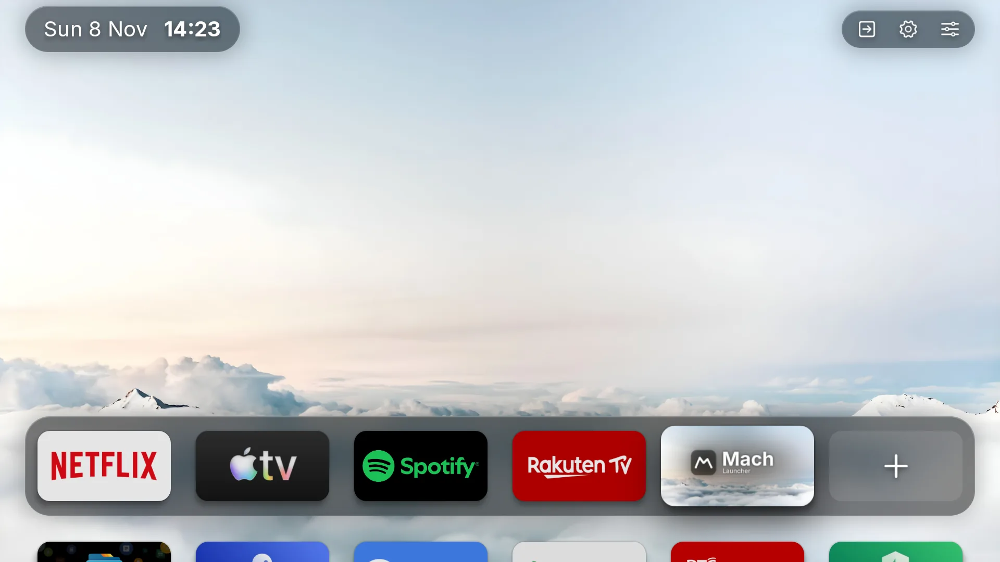
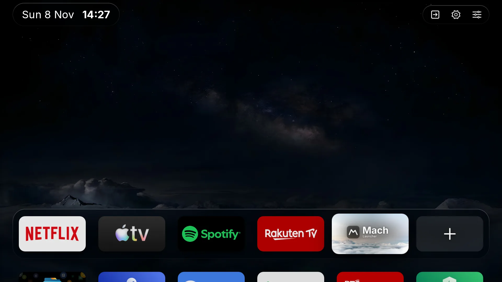
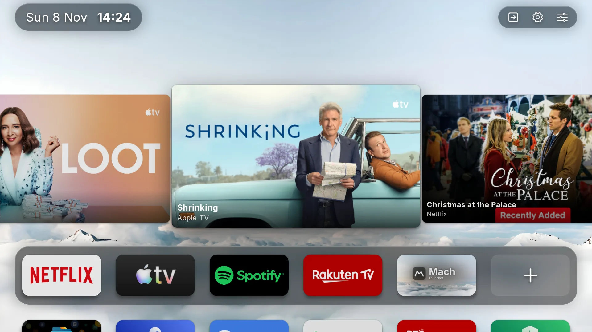
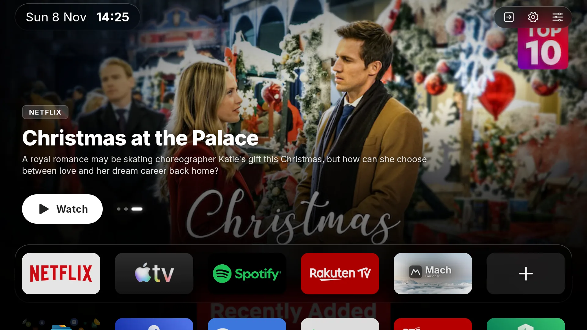
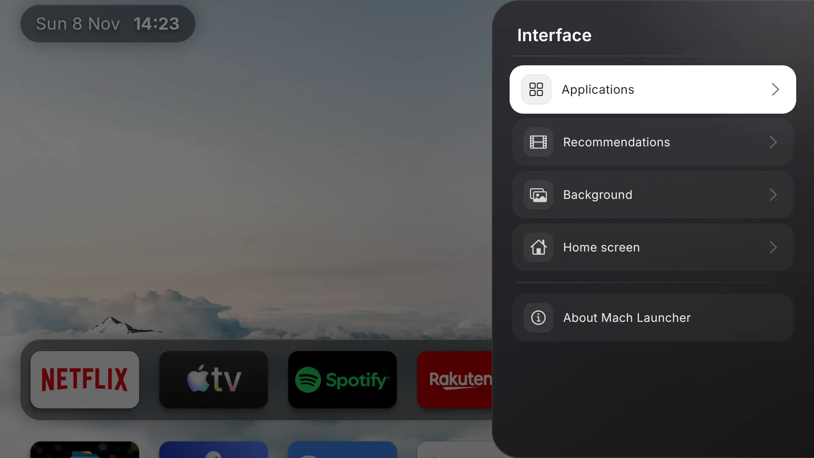

-

Home Clouds by day (opens in a new tab) -

Home Clouds by night (opens in a new tab) -

Recommendations Shown as a row (opens in a new tab) -

Recommendations Shown as the background (opens in a new tab) -

Settings Interface panel (opens in a new tab)
Installation
Install on Android TV 7.0+
Download the APK, open it on your TV and allow unknown apps when asked. To make Mach your Home screen, follow its Settings → Home screen.
Features
A dock, every app, and what's next
Pin up to six favourites to a frosted dock, browse every TV app A to Z, and see titles from your streaming apps on Home, over day or night clouds.
Permissions
Only what it needs
TV listings for recommendations, Photos for a custom wallpaper, Install unknown apps for updates, and Accessibility for the Home screen switch.
GitHub
Source on GitHub
Code, issues and release notes for every version.
About
Free and open source
GPL-3.0. Forked from Arc Launcher, which builds on LTvLauncher and FLauncher. Set in Inter.